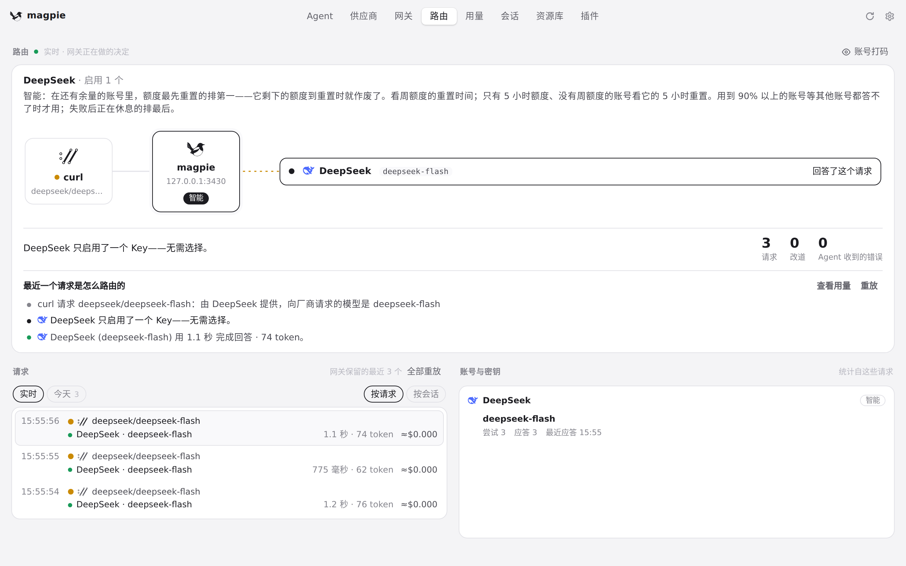
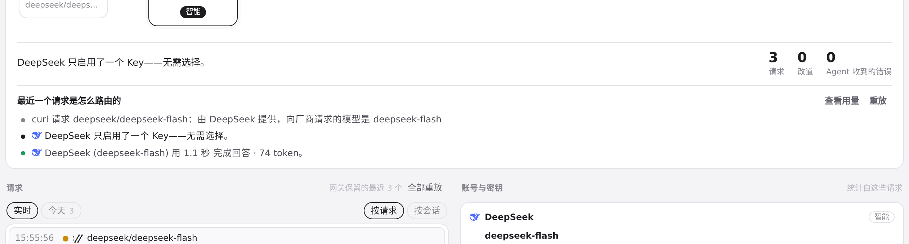
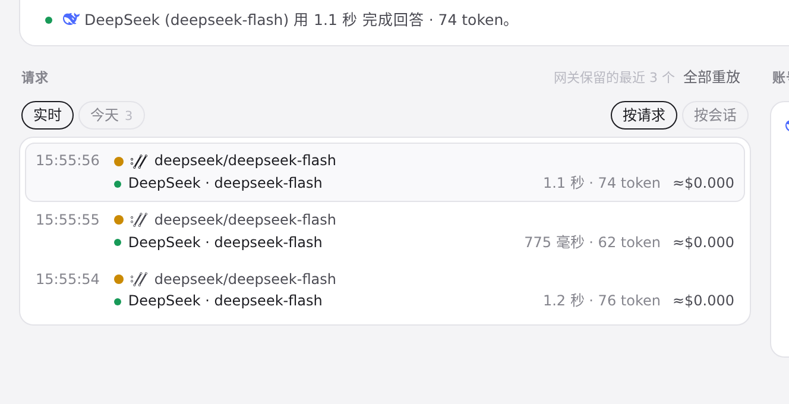

#703 界面预览
commit c2d8c7c · 回到 PR · 路由页的路由解释文案被改写：新增「子代理任务已加密，只能使用 ChatGPT 账号」与「它回答了主代理，因此优先用它读取这条加密任务」，子代理请求改为说明由 magpie 在路由组内选模型，额度节奏不再一律说成「每周」，无候选与无命中规则的说明更短更准确。
红线是鼠标走过的轨迹，红色圆环是一次点击；底部文字是这一步在做什么。空格暂停，← → 逐段查看。

路由页的请求解释 · 路由页：实时路由说明与最近的请求列表（沙盒里只有 DeepSeek）

路由页的请求解释 · 这个请求的路由步骤文案

路由页的请求解释 · 请求列表里每个请求都可以点开看解释